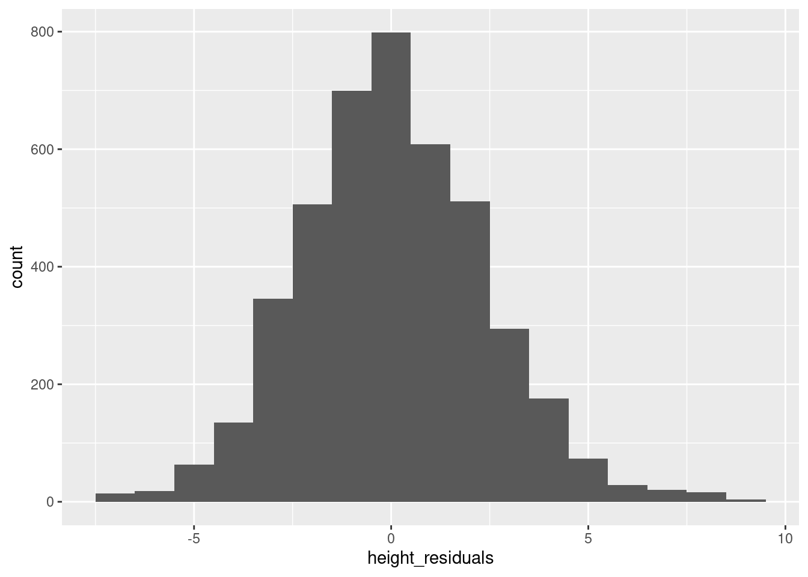
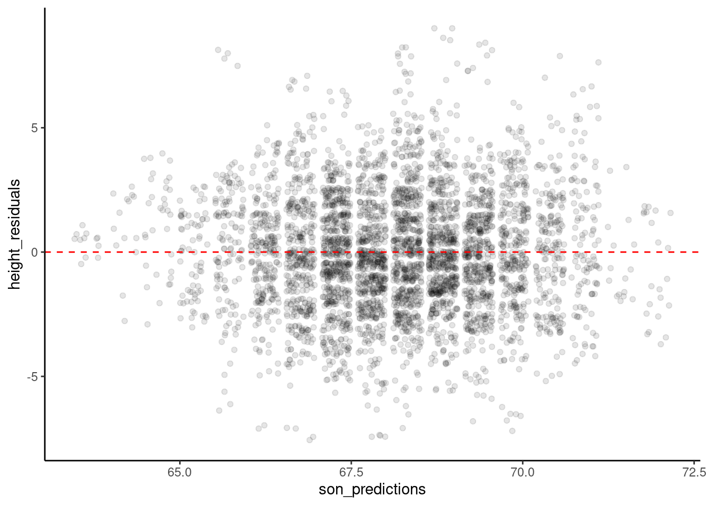

library(ggplot2)Examining model residuals (errors) in R
What’s in this tutorial?
This tutorial explains how to access and visualize the residuals and predicted values from a linear model in R. In the process, we will also discuss some about list objects in R, because when you understand that many complex objects in R are structured similar to lists, it makes it easier to extract values from them.
I recommend going through the Unit 4 reading before going through this tutorial.
Loading data and packages
Load ggplot2
We will use the ggplot2 package for visualizing residuals.
Load the Pearson & Lee (1903) data
Use the code here to read in a subset of the data from Pearson & Lee (1903), which is a classic data set of the heights of fathers and their sons collected in a survey. This data is derived from the PearsonLee data set found in the HistData package, and more details can be found in the documentation for that package.
I’m naming the variable “pl” to stand for Pearson & Lee.
pl <- read.csv("FatherSonHeights.csv")
head(pl) observation father_height son_height
1 1 62.5 59.5
2 2 62.5 59.5
3 3 63.5 59.5
4 4 63.5 59.5
5 5 64.5 59.5
6 6 64.5 59.5This data should have 4,312 rows and three variables, though the observation variable is just an arbitrary number matching the row number.
The father_height and son_height variables are expressed as inches. All of the measurements were rounded to the nearest inch but then recorded on the “half-inch”. In other words, there are values 62.5, 63.5, 64.5, and so on, but no values 62.0, or any value between the XX.5 values.
This means we will frequently use “jitter” when we create scatterplots. See the Code Tutorial for scatterplots for details on jitter and other techniques for handling overplotting.
Quick recap: what are residuals?
The basic concept (discussed in the Unit 4 reading) is that when we have a fitted model, the regression line represents our predictions for the model, where we use x values to predict y values. The difference (meaning literally subtraction) between a predicted y value and the actual y value observed for a data point is called the “error” or “residual.” In this guide, I will henceforth call them “residuals”, because that’s the term most of the R functions and objects use.
The reading for Unit 4 goes into more detail about why we care about residuals. This guide is just here to show you how to work with them in R.
Getting residuals from a fitted model
The first step is to fit a model. Here, we have a simple linear model with the heights of fathers predicting the heights of their sons:
height_model <- lm(son_height ~ 1 + father_height, data = pl)Then there are basically two ways of getting residuals from this model: the residuals function (which also has an alias called resid) and the “residuals” vector that’s in the model object itself.
residuals function
Here’s how the function works:
height_residuals <- residuals(height_model)What you get is just a vector of numbers that is in the order of the data that was used to fit the model. Easy. This function works for other kinds of models in R as well, if it’s been implemented by the designers of those model objects.
Getting residuals from the model object
The residuals are also already stored in the model object itself. But to get them out, we need to talk a bit about complex objects and list objects in R.
R has a basic data structure called a list. It differs from the simpler vectors, because all of the values in a vector have to have the same data type (like all numbers, or all strings), but a list is more like a “grab bag” of potentially different kinds of objects. For example, the following is a possible list:
weird_list <- list(2, "A", height_model, some_resids = head(height_residuals))
print(weird_list)[[1]]
[1] 2
[[2]]
[1] "A"
[[3]]
Call:
lm(formula = son_height ~ 1 + father_height, data = pl)
Coefficients:
(Intercept) father_height
33.2681 0.5193
$some_resids
1 2 3 4 5 6
-6.222119 -6.222119 -6.741383 -6.741383 -7.260648 -7.260648 Note a few things here:
- The items are still numbered starting from 1 like a vector, but there are double brackets
[[ ]]instead of the single brackets that vectors use. This means that we can get just the value “A” from the above list withweird_list[[2]]. - This list has a single number, a string, the entire model we fit, and then a vector of numbers. All of these are different types of things, but they are all fine as members of a list.
- For the last item, we gave it a name when we used the “argment-like” notation of
some_resids = .... You can see this in the print-out, because instead of seeing[[4]]for the final member of the list, we see$some_resids. This is important, and we’ll say more in the next section.
Complex objects are usually “list-like”
So it turns out that a LOT of objects in R share this basic property with lists, that they are collections of different things, bundled together into a single object. This means that we can access the different parts of these objects just like we would access different parts of a list.
This is how we will examine the model fit object. First, to be a little more precise, we should say that this is an “lm” object, because that’s what the function class tells us:
class(height_model)[1] "lm"So what’s contained in an “lm” object? The first step is to use the names function:
names(height_model) [1] "coefficients" "residuals" "effects" "rank"
[5] "fitted.values" "assign" "qr" "df.residual"
[9] "xlevels" "call" "terms" "model" This is a great way to get more info about objects you’re working with in R. Basically any kind of complex object that is more complicated that a vector or a data frame is likely to have a list-like structure, which means it probably has names of the things in it.
And as we can see here, there’s something called “residuals” right there in the model itself, as well as “coefficients”, “fitted.values”, and other handy stuff.
Using names() is usually a first good step, because the output is simpler to look at, but if you want more details, you can use the str() function (which stands for “structure”) to see a lot more info about the structure of the “lm” object, what kinds of things each member of the object is, and so on:
str(height_model)List of 12
$ coefficients : Named num [1:2] 33.268 0.519
..- attr(*, "names")= chr [1:2] "(Intercept)" "father_height"
$ residuals : Named num [1:4312] -6.22 -6.22 -6.74 -6.74 -7.26 ...
..- attr(*, "names")= chr [1:4312] "1" "2" "3" "4" ...
$ effects : Named num [1:4312] -4475.87 92.75 -6.53 -6.53 -7.08 ...
..- attr(*, "names")= chr [1:4312] "(Intercept)" "father_height" "" "" ...
$ rank : int 2
$ fitted.values: Named num [1:4312] 65.7 65.7 66.2 66.2 66.8 ...
..- attr(*, "names")= chr [1:4312] "1" "2" "3" "4" ...
$ assign : int [1:2] 0 1
$ qr :List of 5
..$ qr : num [1:4312, 1:2] -65.6658 0.0152 0.0152 0.0152 0.0152 ...
.. ..- attr(*, "dimnames")=List of 2
.. .. ..$ : chr [1:4312] "1" "2" "3" "4" ...
.. .. ..$ : chr [1:2] "(Intercept)" "father_height"
.. ..- attr(*, "assign")= int [1:2] 0 1
..$ qraux: num [1:2] 1.02 1.03
..$ pivot: int [1:2] 1 2
..$ tol : num 1e-07
..$ rank : int 2
..- attr(*, "class")= chr "qr"
$ df.residual : int 4310
$ xlevels : Named list()
$ call : language lm(formula = son_height ~ 1 + father_height, data = pl)
$ terms :Classes 'terms', 'formula' language son_height ~ 1 + father_height
.. ..- attr(*, "variables")= language list(son_height, father_height)
.. ..- attr(*, "factors")= int [1:2, 1] 0 1
.. .. ..- attr(*, "dimnames")=List of 2
.. .. .. ..$ : chr [1:2] "son_height" "father_height"
.. .. .. ..$ : chr "father_height"
.. ..- attr(*, "term.labels")= chr "father_height"
.. ..- attr(*, "order")= int 1
.. ..- attr(*, "intercept")= int 1
.. ..- attr(*, "response")= int 1
.. ..- attr(*, ".Environment")=<environment: R_GlobalEnv>
.. ..- attr(*, "predvars")= language list(son_height, father_height)
.. ..- attr(*, "dataClasses")= Named chr [1:2] "numeric" "numeric"
.. .. ..- attr(*, "names")= chr [1:2] "son_height" "father_height"
$ model :'data.frame': 4312 obs. of 2 variables:
..$ son_height : num [1:4312] 59.5 59.5 59.5 59.5 59.5 59.5 59.5 59.5 60.5 60.5 ...
..$ father_height: num [1:4312] 62.5 62.5 63.5 63.5 64.5 64.5 64.5 64.5 62.5 62.5 ...
..- attr(*, "terms")=Classes 'terms', 'formula' language son_height ~ 1 + father_height
.. .. ..- attr(*, "variables")= language list(son_height, father_height)
.. .. ..- attr(*, "factors")= int [1:2, 1] 0 1
.. .. .. ..- attr(*, "dimnames")=List of 2
.. .. .. .. ..$ : chr [1:2] "son_height" "father_height"
.. .. .. .. ..$ : chr "father_height"
.. .. ..- attr(*, "term.labels")= chr "father_height"
.. .. ..- attr(*, "order")= int 1
.. .. ..- attr(*, "intercept")= int 1
.. .. ..- attr(*, "response")= int 1
.. .. ..- attr(*, ".Environment")=<environment: R_GlobalEnv>
.. .. ..- attr(*, "predvars")= language list(son_height, father_height)
.. .. ..- attr(*, "dataClasses")= Named chr [1:2] "numeric" "numeric"
.. .. .. ..- attr(*, "names")= chr [1:2] "son_height" "father_height"
- attr(*, "class")= chr "lm"As you can see, this output can be a little more overwhelming. But you can also see that there are the “dollar-sign” names at each level, so at the top we can see $ coefficients, $ residuals, and so on. These are the names we got with names(), and by using the $ notation, we can easily extract the values.1
1 This dollar-sign notation is the same that we use to get columns from a data frame. The reason is not a coincidence, because data frames are also similar to lists, where you can think about them as a list of columns.
Getting residuals from the “lm” object
So here’s where we can use the list-like structure of the “lm” model object to just grab those residuals from the model. And we can print out the first and last few values to convince ourselves that this gets us the same values as the residuals() function we used above:
height_residuals_v2 <- height_model$residuals
head(height_residuals) 1 2 3 4 5 6
-6.222119 -6.222119 -6.741383 -6.741383 -7.260648 -7.260648 head(height_residuals_v2) 1 2 3 4 5 6
-6.222119 -6.222119 -6.741383 -6.741383 -7.260648 -7.260648 tail(height_residuals) 4307 4308 4309 4310 4311 4312
7.104500 6.585235 6.585235 6.585235 8.104500 7.585235 tail(height_residuals_v2) 4307 4308 4309 4310 4311 4312
7.104500 6.585235 6.585235 6.585235 8.104500 7.585235 Moving forward, it doesn’t matter which of these techniques we use. So either residuals(model_fit) or model_fit$residuals is a valid way of getting the residual values.
Getting model predictions
In Challenge 3, we calculated model predictions “manually,” using the linear equation and our model parameters (intercept and slope), so that we could build understanding of how those predictions are generated.
But in practice, there are handier ways of doing things. Like with the residuals, there are a couple of convenient ways to get the model predictions. The following two things are equivalent:
height_predictions <- predict(height_model)
height_predictions_v2 <- height_model$fitted.values
head(height_predictions) 1 2 3 4 5 6
65.72212 65.72212 66.24138 66.24138 66.76065 66.76065 head(height_predictions_v2) 1 2 3 4 5 6
65.72212 65.72212 66.24138 66.24138 66.76065 66.76065 tail(height_predictions) 4307 4308 4309 4310 4311 4312
70.39550 70.91477 70.91477 70.91477 70.39550 70.91477 tail(height_predictions_v2) 4307 4308 4309 4310 4311 4312
70.39550 70.91477 70.91477 70.91477 70.39550 70.91477 How to visualize residuals
Now that we know how to get residuals (and predicted values), we can look at how to visualize them. We can use the same tools we have learned in other tutorials, namely histograms and scatterplots.
Attaching the residuals and predictions to your data frame
As a preliminary step, I recommend that after you fit your model, you can create new columns that represent the residuals and predicted values. One reason for this is that it’s possible you may do some other manipulation of your data, and if you do something that changes the order of how rows are sorted, the values you get for residuals and predictions may no longer line up with the values they originally came from. In other words, each individual residual or prediction is associated with a row of your data, and the best way to keep that association in sync is to make the residuals/predictions into new columns in the data.
pl$height_residuals <- residuals(height_model)
pl$son_predictions <- predict(height_model)
head(pl) observation father_height son_height height_residuals son_predictions
1 1 62.5 59.5 -6.222119 65.72212
2 2 62.5 59.5 -6.222119 65.72212
3 3 63.5 59.5 -6.741383 66.24138
4 4 63.5 59.5 -6.741383 66.24138
5 5 64.5 59.5 -7.260648 66.76065
6 6 64.5 59.5 -7.260648 66.76065Is this somewhat redundant? Yes. If you have a huge amount of data, could this increase the data frame’s size in memory too much? Yes. But most of the time, it’s a bit of a safer route to go, especially when you are still in the midst of exploring your data. In other words, if you want to closely examine your residuals and/or fitted values, it can be a good idea to just make them columns in the same data frame as your data, to make it just a little easier to get to them.
Visualizing residuals step 1: histogram
Another side-benefit of making the residuals and predictions columns in your data is that it makes it a little more convenient when we use ggplot(), since we can just refer to the column names.
Much like when we are examining our data variables for the first time, the first step when looking at residuals is to get a histogram. This is especially important for residuals since the linear model has a fairly strong assumption that residuals are normally distributed, and a histogram is a great way to check that:
ggplot(pl, aes(height_residuals)) + geom_histogram(binwidth = 1)
You may want to also plot a normal distribution using densities as we did in the Code Tutorial on univariate distributions, because as discussed in the reading, it is an assumption of linear regression that residuals should be normally distributed.
Visualizing residuals step 2: plotting residuals vs. predicted values
The next step is a scatterplot. The question is that if residuals are on one axis, which axis should they be on, and what variable should be on the other axis?
There are lots of different options, which can tell you different things, but one of the most useful visualizations is to plot predicted values on the x-axis and residuals on the y-axis. The reason for this is that moving along the predicted values is like moving along the prediction line. And as we move along the prediction line, we hope to see a similar spread and pattern of residuals as we go. In other words, the “spread” of residuals around a prediction should ideally look similar whether you are predicting small values or large values.
We can see a nice example of this in our height model. Here, we want to jitter values (because of the overplotting issue described above), but we need to adjust the height of the jittering, due to the different scales of the data. I am using the “classic” theme to get rid of the background “grid” to make the patterns a little easier to see. The red dashed line indicates residual values of zero.
ggplot(pl, aes(son_predictions, height_residuals)) +
geom_jitter(height = .4, alpha = .1) +
geom_hline(yintercept = 0, color = "red", linetype = 2) +
theme_classic()
There are still some vertical “stripes” in the data, due to the fact that predictions are still based on our real data, which has the “1 inch resolution” issue discussed above.
But the main takeaway here is that the data looks like kind of a random “cloud” centered vertically around 0 on the y axis. This is what a “good” distribution of residuals when you have a linear regression. The Practice and Challenge for Unit 4 will give you a look at what some “bad” or “degenerate” patterns of residuals can look like.
Summary
Using either the built-in functions residuals and predict or the values stored in the model “lm” object itself, it’s easy to access the residuals and predicted values from a linear model in R.
When examining residuals, a simple histogram and a scatterplot of residuals by predictions are the two first things you can do in order to check for potential problems in your model.